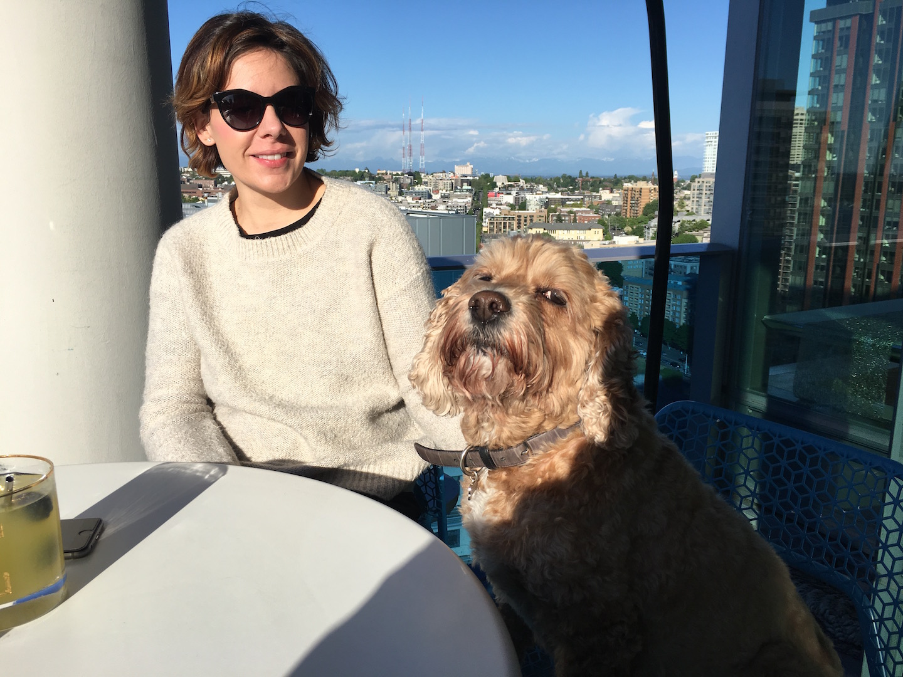
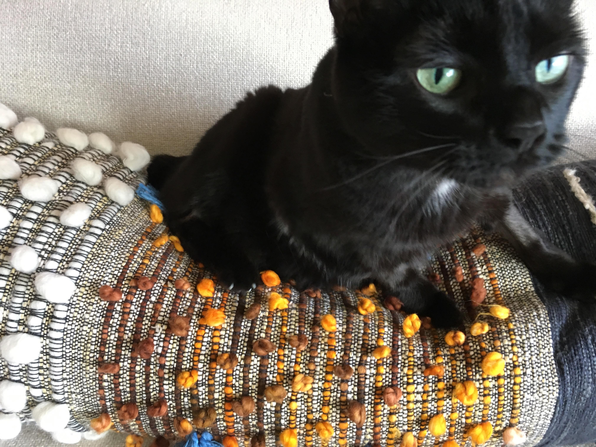

Native Seattleite, professional egoist, peculiarist, sardonicist-trixter, just don't call me a 'millennial' unless you have something nice to say about that.
Owner of Paddington, a co-dependent cock-a-poo with a remarkably testy constitution and a femme feline that goes by Sebastian for no reason except to keep you on your toes.
At work
At heart I am a scientist (hence, molecular biology), which is the intellectual's way of describing skeptics and fundamentally curious beings. Exposure to a variety of opportunities inform and strengthen my ability to navigate complex problems. I have a talent for streamlining production through strategic changes in workflow and place a premium on accuracy and speed. I tend to enjoy self-directed learning in a collaborative environment. I'm always scheming up creative solutions, lets do it together.
Me and Paddington at home

Sebastian, of course

Moms are the best, I don't care what your therapist says